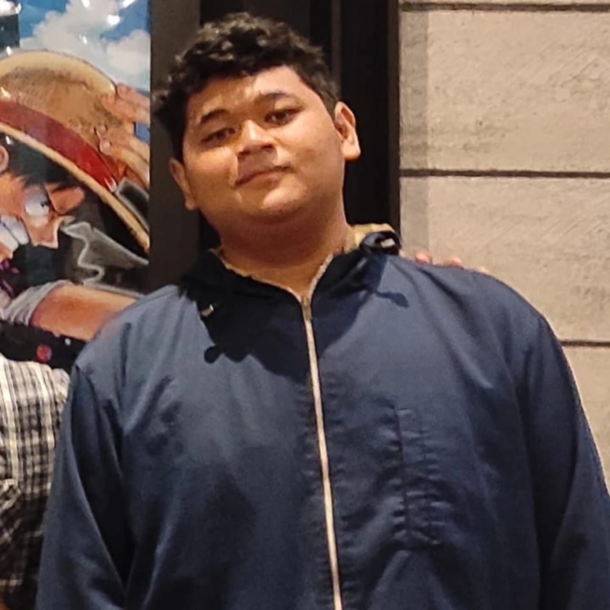

Profil Pembuat
Nama: Muhammad Lukman Hakim
NIM: 24390100001
Prodi: D3 Sistem Informasi
Deskripsi Singkat: Saya membuat website ini untuk memenuhi tugas UTS dengan tema cerita horor sederhana. Website ini dibuat menggunakan HTML, CSS, dan sedikit JavaScript untuk efek animasi teks dan navigasi interaktif.